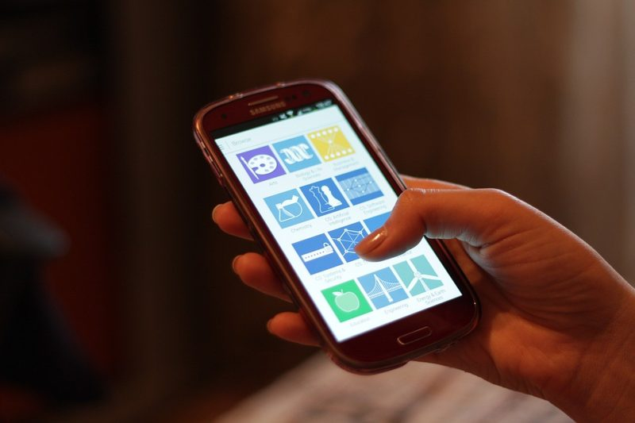
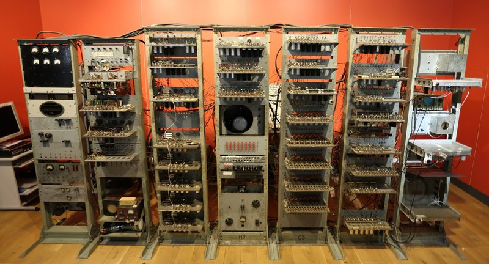
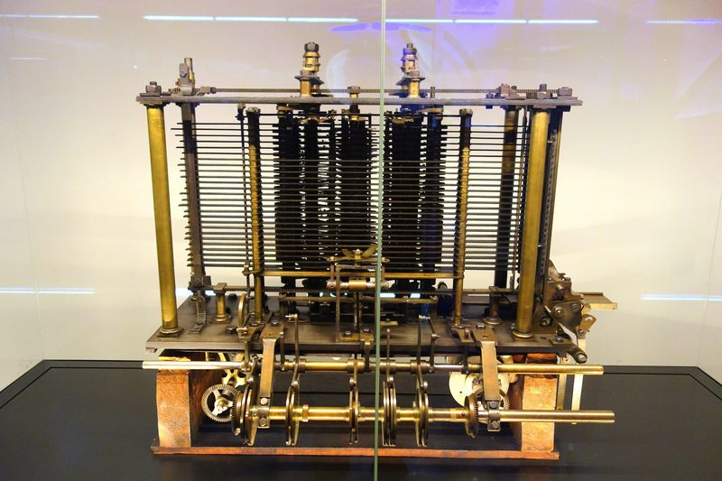
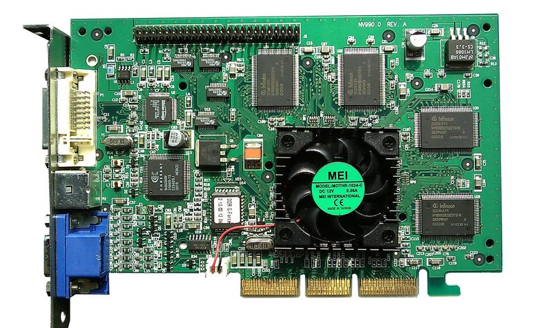
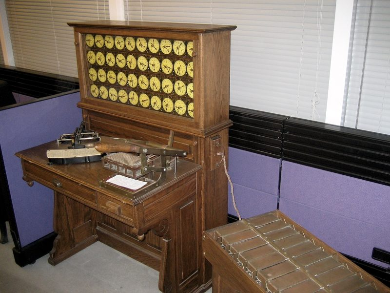
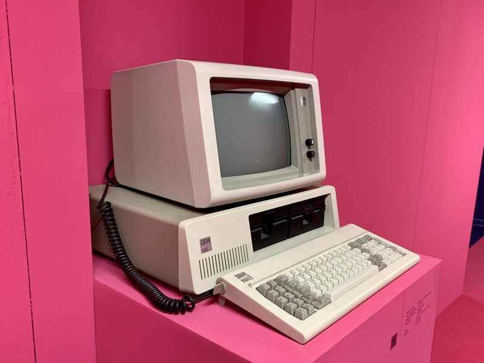
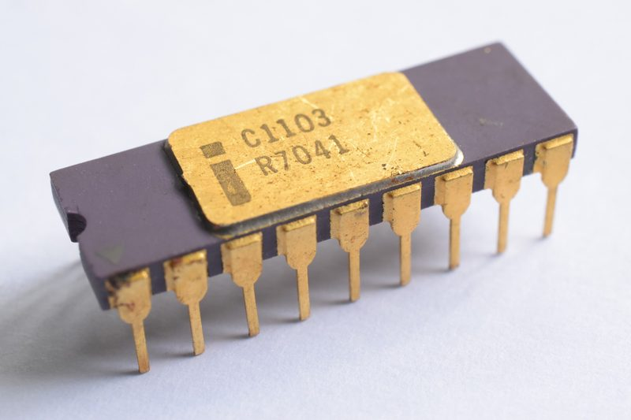
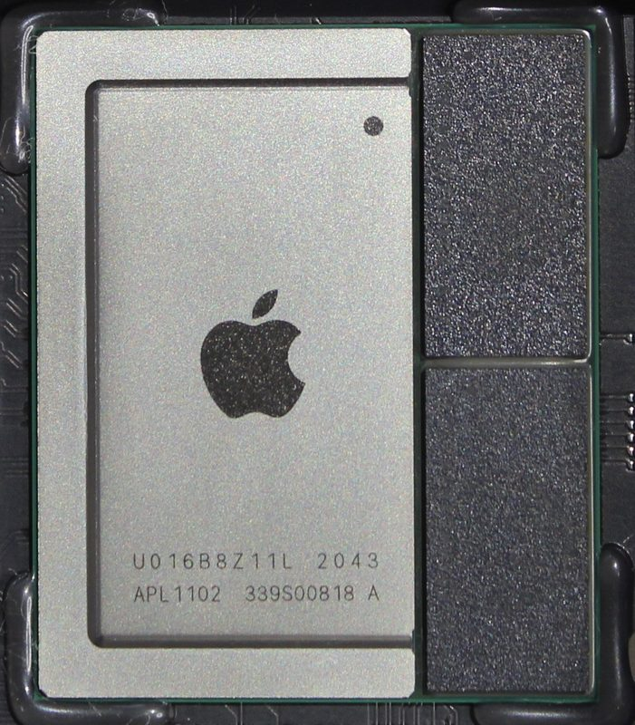
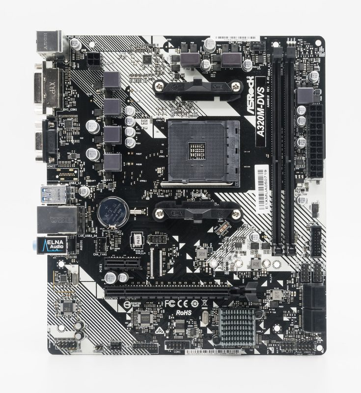
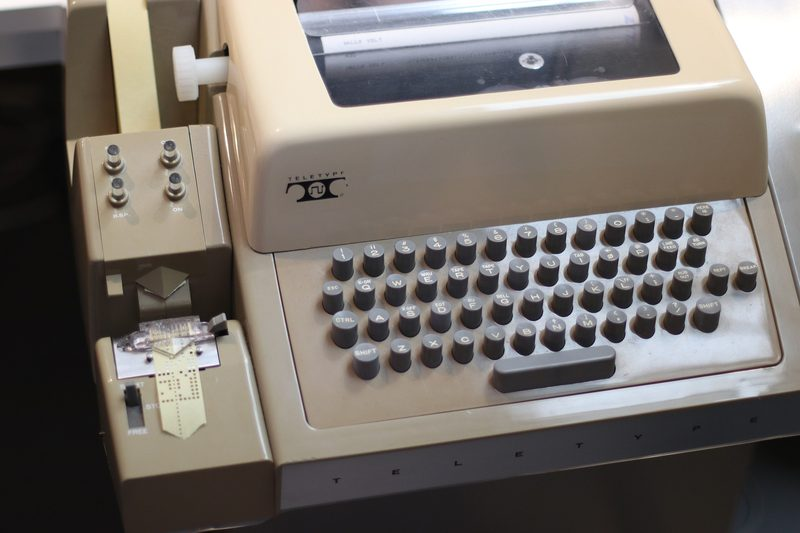

ICT · Liceo Vittoria
About this site
How to use it, what it does with your data (nothing), and who took the photos.
How to use the site
- Chapters
- There is one chapter for each lesson. Read it after the lesson, or before, if you were absent. Each chapter has a story, the science, quick questions, an interactive object, exercises and the words to learn.
- Readable
- The Readable button at the top makes the text bigger and adds more space between lines, letters and words. When it is on, you can also choose an Easy font (Atkinson Hyperlegible), made to be easy to read.
- Theme
- The Theme button changes the colours: Auto follows your device, Light is dark text on paper, Dark is light text on navy.
- Print or PDF
- The Print button prints the page. To make a PDF, choose “Save as PDF” as the printer. Interactive objects print as a paper version; solutions print only if you opened them.
- Progress
- When you answer the quick questions, try the exercises and write your answer in “Your turn”, the bar at the top of the chapter fills. The Unit page shows a small bar for every chapter.
- Extra
- Want more after lesson 1? The Extra page has secret codes, a small Enigma machine and Moore's law. It is not part of the test.
- Keyboard
- Everything works with the keyboard: Tab to move, Enter or Space to press a button.
Privacy
- No accounts and no passwords.
- No tracking, no statistics, no advertising, no cookies.
- The fonts are on this site: nothing is loaded from other websites.
- Your answers and your progress are saved only in this browser (with a feature called localStorage). They are never sent anywhere. Your teacher cannot see them.
- If you use a shared computer, other people who use the same browser can see what you wrote. To delete it, clear the site data in your browser settings.
- If your browser blocks storage, the site still works, but it forgets your answers when you close the page.
For teachers
The “Human or machine?” game reads its answers from static/data/human-or-machine.json. To use your own answers, replace that file with one in the same format (keep the field names, change the texts) and publish the site again. Before you publish, check that the file contains no student names or personal data.
The site is static: plain HTML, CSS and JavaScript, built with build_site.py from the unit's content file. It works from a USB stick too: open index.html.
Image credits
Every photo is free to reuse under the licence shown. Most come from Wikimedia Commons. This is the full list of the photos on this site.
| Image | Title | Author | Licence | Source |
|---|---|---|---|---|
L1_cold_teardown |
IPhone 4, model A1332 - case opened-7077 | Raimond Spekking | CC BY-SA 4.0 | source |
L1_eniac_room |
Glen Beck and Betty Snyder program the ENIAC in building 328 at the Ballistic Research Laboratory | Unknown author | Public domain | source |
L2_pixels_mid |
Arara-vermelha - PARNA da Serra da Capivara - LeonardoRamos(001) | LeonardoRamos | CC BY-SA 4.0 | source |
L3_4004 |
Intel 4004 on Busicom calculator circuit board | MaltaGC | CC BY-SA 4.0 | source |
L3_phone_soc |
Qualcomm snapdragon 450 chipset | Jaredryandloneria | CC BY-SA 4.0 | source |
L4_cold_hdd |
Hard disk drive platter, Samsung MP0402H | Mk2010 | CC BY 4.0 | source |
L4_ram_stick |
RAM Module (SDRAM-DDR4) | ElooKoN | CC BY-SA 4.0 | source |
L5_desktop_open |
Insides of my PC (1314722197) | Douglas Muth from Philadelphia, PA, USA | CC BY-SA 2.0 | source |
L5_gpu_card2 |
Gigabyte GeForce RTX 3090 Eagle OC 24G, 24576 MiB GDDR6X Front 20201114 DSC5880 | PantheraLeo1359531 | CC BY 4.0 | source |
L7_datacenter |
Wikimedia Foundation Servers-8055 35 | Victor Grigas | CC BY-SA 3.0 | source |
h_die_shot2 |
Zen2 Matisse Ryzen 7nm Core Die shot | Fritzchens Fritz from Berlin | CC0 | source |
h_light_switch |
White light switch | Santeri Viinamäki | CC BY-SA 4.0 | source |
h_macintosh |
Steve Jobs and Macintosh computer, January 1984, by Bernard Gotfryd - edited | Photo: Bernard Gotfryd - Edited from tif by Cart | Public domain | source |
h_transistor |
A replica of the first working transistor 02 | Mister rf | CC BY-SA 4.0 | source |
 v5_chat_phone |
Smartphone Use | Océanos y dados | CC0 | source |
 v5_manchester_baby |
Manchester baby head on | Geni | CC BY-SA 4.0 | source |
v5_turing_machine_model |
Turing Machine Model Davey 2012 | Rocky Acosta | CC BY 3.0 | source |
 v6_analytical_engine |
Analytical engine trial model, Charles Babbage, 1834-1871 - Science Museum, London - DSC05565 | Daderot | CC0 | source |
 v6_geforce256 |
VisionTek GeForce 256 | Hyins | Public domain | source |
 v6_hollerith |
HollerithMachine.CHM | Adam Schuster | CC BY 2.0 | source |
 v6_ibm_pc |
IBM Personal Computer (1981) | Federigo Federighi | CC BY-SA 4.0 | source |
 v6_intel1103 |
Intel C1103 | Thomas Nguyen | CC BY-SA 4.0 | source |
 v6_m1 |
Mac Mini M1 chip | Sonic8400 | CC BY-SA 4.0 | source |
 v6_motherboard |
2023 Płyta główna ASRock A320M-DVS | Jacek Halicki | CC BY-SA 4.0 | source |
 v6_teleprinter_real |
Teletype Model 33 - 48930224272 | stiefkind | CC0 | source |


.jpg){kind=link}


.jpg){kind=link}
.jpg){kind=link}


.jpg){kind=link}


Fonts
Space Grotesk (Florian Karsten) and Atkinson Hyperlegible (Braille Institute of America), both under the SIL Open Font License 1.1. The licence texts are in static/fonts/.